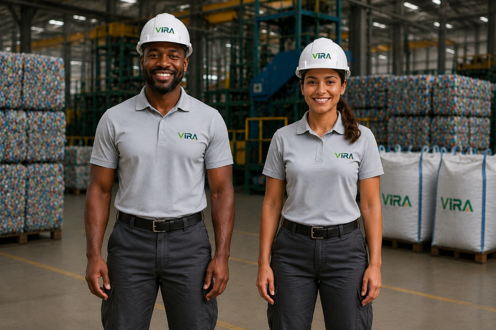

Transportes e doca
Alta visibilidade e mobilidade para motoristas e operadores de recebimento.
- Ripstop respirável
- Faixas refletivas
- Proteção UV50+
- Repelência a óleo
Vestuário e ergonomia industrial
Uma coleção criada para unir segurança, conforto climático, durabilidade e aplicação consistente da marca VIRA.

Padrão técnico
As peças foram organizadas por contexto de trabalho, mantendo uma linguagem visual única em toda a operação.
Especificações por divisão
Materiais e acabamentos adequados ao clima do Agreste e às exigências de cada ambiente de trabalho.
Alta visibilidade e mobilidade para motoristas e operadores de recebimento.
Proteção e resistência para moagem, termocompressão e manutenção pesada.
Apresentação técnica com conforto para laboratório, reuniões e atendimento.
Peças para visitas, feiras, ações educativas e eventos da marca.
Liberdade de movimento e secagem rápida para conservação e infraestrutura.
Aplicação da marca
A marca deve manter proporção, contraste e área de proteção em bordados, silk, etiquetas e acessórios. Arquivos vetoriais e cores oficiais estão disponíveis no Brand Book.
Acessar arquivos de marcaAcessar arquivos de marca